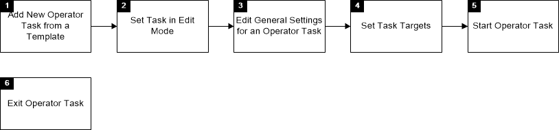
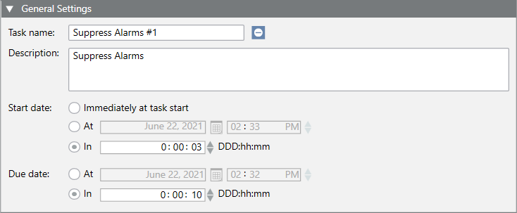
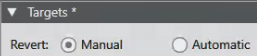
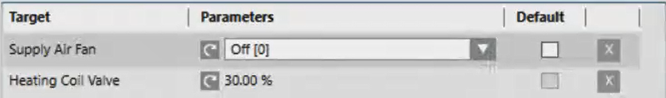
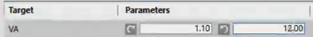
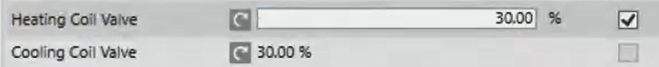

Set up New Operator Tasks for Desigo
Scenario: You want to create and start a new operator task. You can limit in time changes to the operator task. This ensures that changes are reset to automatic mode after a set duration. The following templates can be selected:
- Command BACnet Output
- Switch Out of Service BACnet Input
- Deactivate / Activate BACnet Alarm
- Deactivate / Activate Offline Trend
- Suppress Alarms (Global Template)
Reference: Background information is available in the section Operator Tasks.
- Edit operator tasks
- Other procedures for operator tasks
- Overview of operator tasks
- Integrate operator tasks
- Configuration file for operator task templates (JSON file)
Flowchart:

Prerequisites:
- The System Browser is in Application view.
Steps:
1 – Add New Operator Task from a Template
- Select Applications > Operator tasks.
- The list of all operator tasks is displayed in the Tasks register.
- Click Add and select the relevant task template from the preconfigured templates in the system:
- Command BACnet Output
- Switch Out of Service BACnet Input
- Deactivate / Activate BACnet Alarm
- Deactivate / Activate Offline Trend
- Alarm Suppression
- The new operator task is displayed in the list. The task name is composed from the template name, followed by # and then a one-up number (for example, myoperatortask#1).
2 – Set Task in Edit Mode
- In the Tasks tab, select the new task from the list.
- Click Edit .
3 – Edit General Settings for an Operator Task
- In the General Settings expander, do the following:
- (Optional) In the Task Name field, change the standard text of the template to a unique name.
- (Optional) In the Description field, change the standard text of the template to an suitable description.
- Indicate, in addition to the Expiration date, one of the types of due dates for a task:
- Select On and set the date and time.
- Select In and set a specific time for the selected date.
- Click Save.
- The task state is now

Ready.
4 – Set Task Targets
- Open the Targets expander.
- (Optional) Edit the setting Reset (Reset the action if the countdown time has expired for the due date). The default setting may differ depending on the selected template.

- In System Browser, select Logical View.
- Select Logical > [Network name] > [Hierarchy structure].
- Drag one or more objects from the System Browser to the Target field.
NOTE: You can only link objects that are expected for the selected task template. And you cannot save if at least one object is linked to a task. You can however link the same object multiple times if it belongs to different views. This can be useful for certain functions that are only intended to be used in sublevels of a view. You can also delete linked target objects by clicking .
. - The column Parameter is available in the Targets expander if one or more stored target objects include the configuration writable parameters to command or reset actions.
- For stored target objects, including writable parameters for commands:
- The newly stored objects are set to the original value if not supplied by the configuration.
- The newly stored objects are set to currently read value if not supplied by the configuration.
- The newly stored objects are set to the corresponding default value if another stored target object is set as the default (check box Default is selected). - For stored target objects, including writable parameters for reset actions:
- The newly stored objects are set to the original value if not supplied by the configuration. This is the value that the property of the command in question has if the reset action is performed. For example, if a commend changes the value of a parameter, the parameter is reset to its original value after performing the task. The original value is used, - if the Parameter column is available, enter the required parameter to one of the following types:
- Select an element for the list data from the drop-down list.

- Enter a numerical value (the corresponding unit of measurement is also displayed, if available) for analog data.
- For the original value--important for the reset action, click Original value and select an element from the drop-down list (list data) or enter another numeric value (analog data).


NOTE: To reset it, depending on the data type, to the original output value, delete the field (analog data) or click (List data). - If more than one stored target object belongs to the same time, select check box Default to set its value as the default for all store objects of the same type.
- The parameters automatically change for each previously created target object. Each newly created object has the default value.
NOTE: The new value is highlighted when you change the default value for a newly created target object to display the change as it relates to the default value.
If you change the value for the parameter to the default value:
- Click Yes to apply the new value to all created objects of the same type.
- Click No to apply the new value to all created objects of the same type that you have not, however, manually changed.
- Click Save.
- The Result column displays the command state
Unknownand reset the action stateUnknown(if it exists).
5 – Start Operator Task
- Click Start.
- Enter a comment in the Operator Task dialog box. The entry is based on the selected template or project template.
- Click OK.
- For Due date, the set time is added to the present time and only the end time is displayed now.
- In the Results column, the display changes from to .
6 – Exit Operator Task
The following options are available once the due date is reached:
Automatic
In the Results column, the display changes from to . No further user action is required. In the State column, the display changes from  to
to  .
.
Manual
In the Results column, the display changes from to  . In the State column, the display changes from to .
. In the State column, the display changes from to .
- Click Restore.
- Enter a comment in the Operator Task dialog box. The entry is based on the selected template or project template.
- Click OK.
In the Results column, the display changes from zu . In the State column, the display changes from to .

NOTE:
Refer to section Overview of Operator Tasks or Error Messages for Operator Tasks for additional information on error messages.